来源：https://hhkijeuq3w.feishu.cn/docx/CEmIdTFBMoj1R5xAo27cvS0Cnuf
过年期间最近的一个小突破让我有点兴奋：花了500块钱投放，然后配合私信自动回复，丝滑导流到微信，3天时间就带来了130多个精准客户，而且转化效果特别好，搞得我爸元宵节都不过了，初十就开车回厂里上班了。
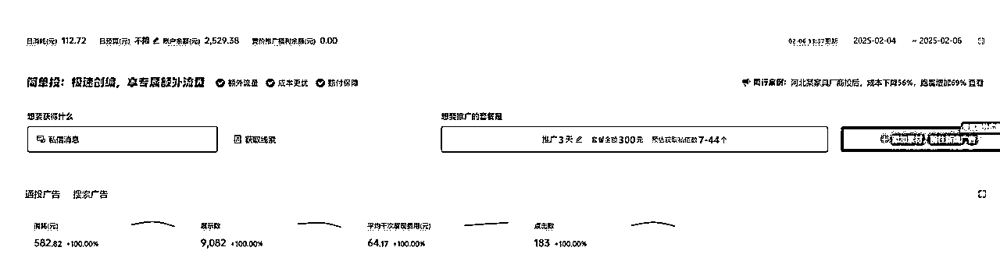
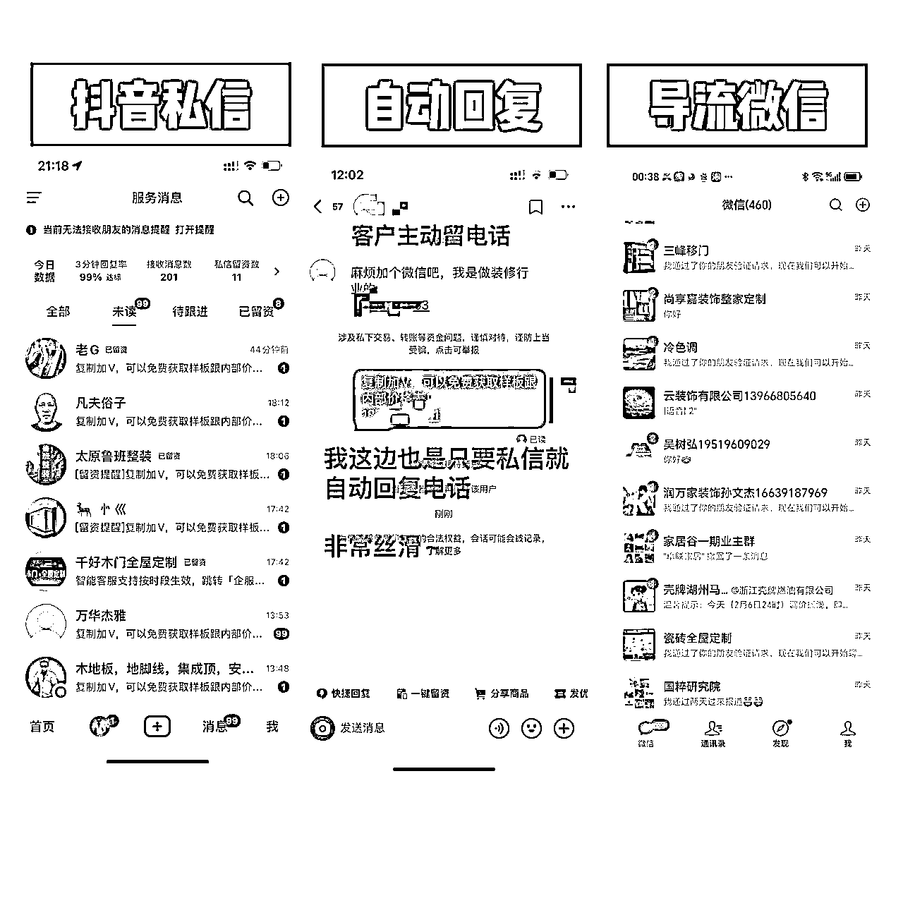
但其实在到达这个结果之前，我在搞流量这条路上走了太多弯路。
回想这三年，我几乎尝试了所有能想到的"骚操作"：阿里巴巴、抖店、直播、小红书矩阵、KOL合作、私域团购、各种截流玩法...以上各种测试花了十几万都不算是标题党，都是实实在在的真金白银，
从阿里巴巴到抖店，到小红书，但凡听说哪个平台能带来流量，我都去试过。
结果呢？
工厂规模从一万平缩减到5000平，又缩到3000平。一心想着省钱，反而把最宝贵的时间都浪费在了
现在回想起来，我特别想问问当时的自己：为什么花了那么多时间，投入了那么多精力，收效却那么差？
答案其实很简单：我一直在找捷径，不想费吹灰之力然后躺赢，却不知，这样的想法反而导致自己走了更多的弯路，
当然也不算弯路，只能说很多方法不适合我的产品，才得出目前的结论，如果不一步步踩坑去测试，也拿不到结果
今天，我想和大家分享这3年来，我在引流上踩过的坑，以及最终找到最适合自己产品的引流方法
说到困局，就不得不说说我当时有多"省钱"。
在追求免费流量的路上，我几乎尝试了所有方法：
▫️ 在阿里巴巴上，这个是纯亏，花了9800入驻+注册公司代理记账等等乱七八糟的费用，阿里巴巴那边就上架了商品，然后所谓的扶持都是要充钱的，动不动就是什么29800升级啥玩意，时间太久不记得了，反正那个时候是生意好，膨胀了所以被忽悠开了这个店，客户质量也不咋地，还浪费我一个客服接待，还好没续费了。
▫️ 在小红书上，我同时运营着10个账号，每天要发布20-30篇笔记。为了模仿爆款，研究了上百个同行账号，反复揣摩他们的文案结构、拍摄角度、甚至字体大小。忙的不亦乐乎，你不能说是没有效果的，有些但不多，因为测试下来，写个两百篇可能会爆个2-3篇，加上我是小众类目，有这样的效果已经很好了，但是想要突破放大，限制很大
▫️ 在抖音上，开了两个抖店，不断发布剪辑视频，有段时间还每天直播了两小时坚持了一个多月，卖了3000多块钱，然后还因为发货延迟被扣了200多块钱（哈哈，想起来我都要被气笑了），甚至还专门找了兼职去找那些抖音大V家装博主合作，小红书也是一样，但是那些博主动不动20%的佣金还嫌少了，而且还有什么坑位费，发短视频宣传上来就是要求免单还要balabala，我的客单价基本都是在500-5000以内，算一下账如果这样玩，我会亏的怀疑人生子都没有了
▫️ 还有什么私域团购，截流，市面上你能找到的主流玩法跟课程我基本上都试过，当然我没做出来的大概率原因不是玩法不行，是不适合我的产品，所以不要被误导，觉得以上玩法都不行，多的是用以上玩法赚大钱的人
以上，看似没花钱，但时间成本早就超过了直接花钱买流量
更要命的是，以上这些方式带来的效果完全不稳定：
我的真实案例：去年618期间，我在小红书上发了一条笔记，是上新了新的款式跟颜色，涨了5000多粉。我以为找到了诀窍，接下来一个月，用同样的方式发了30多条，结果全都沉底了。一条都没有超过20赞。
这种忽高忽低的流量，对工厂来说简直是灾难：
更讽刺的是，我其实很早就知道付费投放。
我原先有篇文章就是讲抖音获客，但是当时学的做IP然后投放是抖+，当时1块钱一个粉丝是真的很划算，我也试过，确实积累了几百个B端客户。但那时的我，还是对"花钱买流量"这事儿有抵触。
总觉得：
就这样，带着这种"小家子"思维，我把大把时间浪费在了：
殊不知，在我沉浸在这些骚操作玩法搞得不亦乐乎的同时，正在浪费更宝贵的东西：时间、精力，还有扩大发展的机会。
真正的转机出现在一个意外发现。
其实为什么我能有这么多时间“瞎折腾”，估计主要是业务比较稳定，所以我太闲了！
然后突然注意到自己小红书上最爆的那3篇笔记，之所以能持续带来询单，是因为这三年一直在聚光投放。虽然每天的预算很小，也就100块钱左右，但带来的流量却异常稳定。同时，我在淘宝的万相台也一直保持着投放，ROI（投资回报率）基本能达到5-8倍，效果出奇的好。
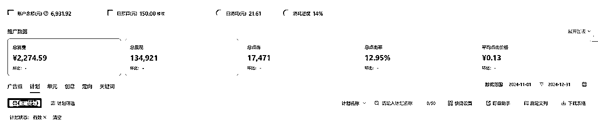
这个发现让我开始重新思考流量策略。既然付费渠道这么稳定，为什么我们之前要把时间都浪费在那些看似免费的方法上呢？
2024年下半年，情况变得更有趣了。
当时我生完娃坐月子期间实在是太无聊，看到生财里面几许的帖子，跟着做了抖音半无人直播。
然后离谱的地方在于，其实我刚开始学这个是想着工厂能无人直播卖货就好了（看吧，我一直在这种惯性思维里面出不来，无脑，简单，挂机这些词汇对我这种懒人有致命的诱惑力）
谁知道，自己家产品没卖出去多少，卖别的产品佣金搞了十几万，这真的是，五味杂陈，难以言说哈哈哈哈哈~
这个项目我还写了万字复盘，感兴趣可以看看~
后续AI开始爆发了，很多大佬也在跟我们一直强调这个机遇的重要性，所以我就又去看各种关于AI相关的帖子跟内容，从自己最基本的需求开始学，
比如了解目前市面上都有哪些比较好的模型，deepseek，GPT，claude，谷歌gimi，秘塔，豆包，kimi，智谱等等，基本上都玩过，还有即梦，海螺，mj，
学到了很多新的词汇，什么工作流，知识库，API，智能体，提示词等等，
每次都是从0开始学，我的学习路径是首先基于自己的实际业务需求，
比如学提示词是为了写小红书文案，跟不同的大模型对话，是为了写出能符合自己要求的文案，
如果只是二创别人的文案，用Kimi或者豆包就可以了，速度又快又没有卡顿，
但是如果要原创目前测试下来最好是claude+deepseek，两个互相辅助真的无敌！
所有的技能知识都不会白学，AI后续在内容跟投放上给了很多的帮助，比如：
如何用AI分析适合自己的投放平台，投放方式
如何用AI找到对标同行
如何用AI写出高转化钩子，高转化短视频素材文案
等等........
真正正视抖音的机遇是，12月份的时候我爸经常反馈说有个渠道一直有客户加他，而且加上的基本都能成交。我仔细分析了一下，发现这些客户都是从抖音企业号来的，因为只有那里留的是他的联系方式。
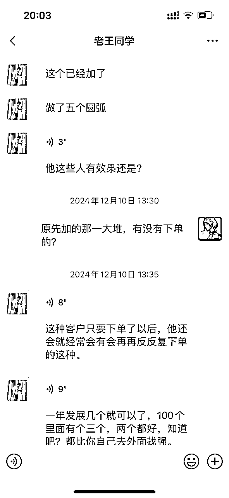
这个意外的发现让我下定决心：系统学习一下各大平台的投流玩法。说实话，以前总觉得投流这个要花不少钱，现在想来真是太小可爱了。
那么问题又来了，投放真的是有钱就可以吗？
说真的，我以前投放特别随意，就用剪映批量混剪做视频，文案也是想到哪写到哪，连个同行调研都没做。现在想想真是太业余了，当时啥也不懂上去就是干，三分钟一刷新500块钱就没了，都不知道怎么没的，就这样被劝退了
这次我付费系统的学习，光抖音ad这一个课程的笔记我就整理2万多个字，当然也别被吓到，目前不管是抖音还是小红书还是视频号，投放都是非常智能的，技术层面没有太多骚操作主要还是自己项目本身，
关键也是找到靠谱的，跟着真正拿到结果的人学习，不然操作起来细节超多，稍有不慎就会亏本，我因为付费了很多已经算是老韭菜了，有鉴别能力，千万不要盲目去把这个当成救命稻草，实体老板一直都是被收割的重点对象，切记。
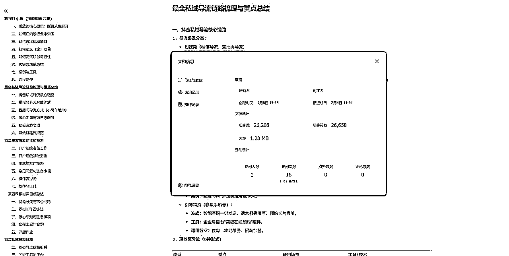
很多人以为投放的重点在于投放技术上，觉得一定要玩出花来。但说实话，我做投放的时候，很多都是直接通投，连定向都懒得设置。
为什么？因为真正的功夫不在这儿。
功夫在哪？
现在的抖音，已经不是2018年那个抖音了。你的客户在看到你的广告之前，已经被同类型的广告洗礼过无数次了。他们之所以会选择你，就是因为你跟别人不一样。可能是项目不一样，可能是模式不一样，也可能是素材差异化做得好。
有些传统老板总觉得，投放一定要精准，好像抖音里面藏着一群从来没看过广告的"小白兔"，就等着你去"收割"。
这怎么可能？
抖音上的用户，尤其是你的目标客户，早就被各种同类广告轰炸过了。能让你胜出的原因很简单：
就这么简单粗暴。
如果你的产品跟别人一样，模式跟别人一样，素材还是抄别人的（而且抄得还不如人家），那你告诉我，凭什么客户要选你？
所以，第一步不是去无脑抄别人，而是要先找到同行素材里的关键痛点。
注意，我不是说不让你参考别人，而是说不要全盘照抄。你得先把同行的关键痛点找准，然后再结合自己的业务定点把痛点融合在一起，还要根据产品特性设计好钩子，引导用户主动添加！
然后你跟我说，你说的好听也很有道理，但是我还是不知道怎么做？？？
我们传统行业老板真的是吃了只知道研发产品的亏，没有互联网思维，也没有优秀的运营跟文案人员，自己搞也没有这个水平，明明很多方法都知道，但是只能干瞪眼，但是，现在AI出来了啊，你拥有了一个不花钱的顶级助手，加上年后deepseek的爆火，网上一堆教程教你怎么写文案，怎么分析产品，怎么去跟AI对话
就拿我最近在用的方法来说：
想写广告文案的时候，让AI帮我分析同行的爆款文案，看看他们用了哪些关键词，文案结构是怎么样的。
比如我最近发现很多同行都在用"工厂直发"这种词，但效果并不好，让AI分析后发现，"免费打样、准时交付"这样的承诺词更容易打动客户。
做素材策划时，我会让AI帮我梳理同行的文案逻辑。通过分析他们的核心痛点、情感触发点、转化要素等，找出哪些是真正打动客户的关键。
但要说清楚，AI只是辅助工具。它不懂你的行业特点，也不了解你的客户真实需求。核心还是要靠自己：理解客户痛点，打造差异化优势，做好服务保障。
系统学习投放之后我才明白，真正的投放是要从人性出发。你的项目、你的素材、你的投放策略，都要围绕着用户的真实痛点来设计，而不是自嗨!
尤其是我们这种传统实体行业，如果客单价基本都在1000以上，然后要做私域的，并且有现成的产品和销售团队，投放还都是合规的。这种情况下，与其整天研究那些所谓的"免费流量"，不如踏踏实实地做付费投放，把精准客户买回来不是更好吗？
这些成功的尝试让我明白：
我把自己的投放路径发出来给大家参考一下，切记，不同行业不同玩法，只是想让大家知道一下，投放没有想象的那么那么难，也没有想象那么花钱~
做投放之前我们要分析一下，是要做toB还是toC？由于我的产品特性，是做B端跟零售都可以的，所以我的投放策略目前是抖音投B端引流到私域，小红书直接toC端售卖，由于产品小众也还没有到需要全平台放量的地步，目前的流量都已经够覆盖整个工厂的产能了
好的以抖音做小B端举例，B端是指线下有实体门店的老板，建材，装修，地板等等行业，这些客户一旦下单就是会长期复购的，以前找的b端老板们目前两年多了还是一直在持续下单，所以值得去私域。
关于抖音怎么开蓝V，什么是直营户，什么是代理户，这些都自己搜索一下，我就不科普了。
直接展示一下我的投流计划跟步骤：
第一步，进入巨量百应的登录账号后台,网址如下：
https://ad.oceanengine.com/promotion/promote-manage/project?aadvid=1764587411635207&filter_st=%25222025-02-01%2522&filter_et=%25222025-02-13%2522
第二步，点击新建项目，进入编辑项目，注意一个细节点：如果是投账号后台私信的话，一定要选单投放载体：抖音私信页（原抖音主页），不要选橙子落地页，除非你的行业需要投落地页
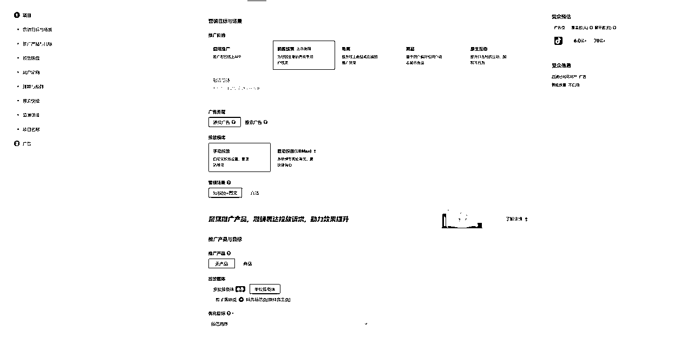
第三步，用户定向这里，除非你的产品有非常明确的指向性，比如：你做的就是只有年轻人喜欢的2次元动漫，年纪大的不会感兴趣，那你就卡一下年龄，反之，老年人产品也是这样，
常规产品一般都是只勾选：24-49岁的人群，还有地域性很强你就卡地域，比如我的产品是全国都可以发货的，所以我地域方面只需要去掉台湾，香港，澳门就可以，如果你的产品只能在杭州卖，那你就行政区域选杭州，要更加细分按商圈只投你周围几公里都行
前期测试都是建立最大化计划，跑3天，尽量都不要限制（具体可以根据自己的经验跟产品特性来，以下都是以我的产品举例）
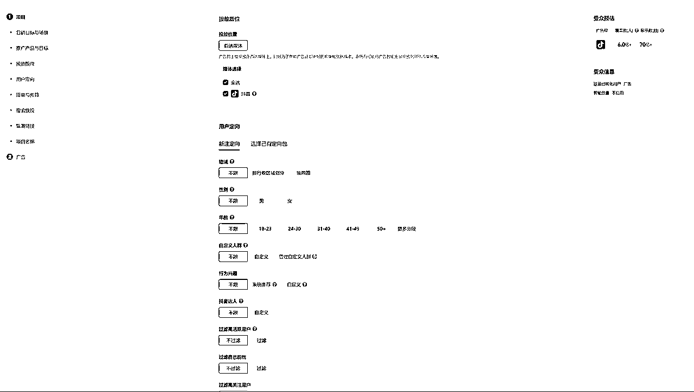
第四步，选择最大化转化，然后如果预算有限，预算可以填个2000或者3000，就看你前期测试愿意花多少钱，这个是整个项目的预算，填多少都行，自己看着填，关键词选择跟自己业务强相关的就可以，出价系数选择1:1(最大转化计划不用填，后续建稳定成本计划需要填一下）
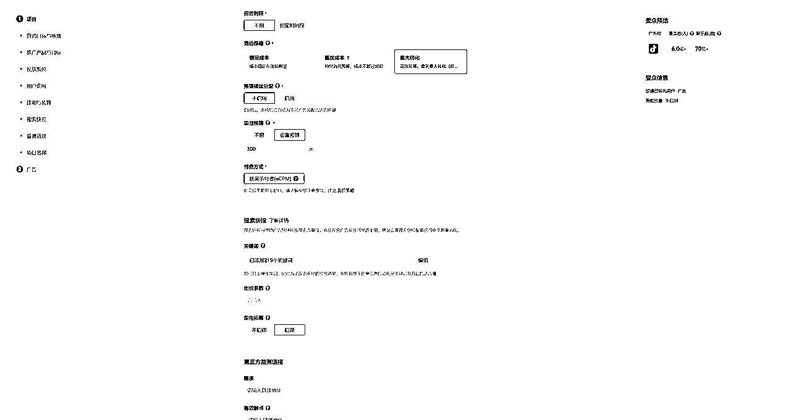
第五步，保存并新建广告，选择添加你剪辑好的视频素材，抖音的即创平台可以审核文案+视频，如果对于自己的宣传文案跟视频画面没有把握，可以先提前审核一下再上传
其他文案素材可以抄同行的或者让AI分析以后写了填上去，然后其他的按照步骤正常填入就行
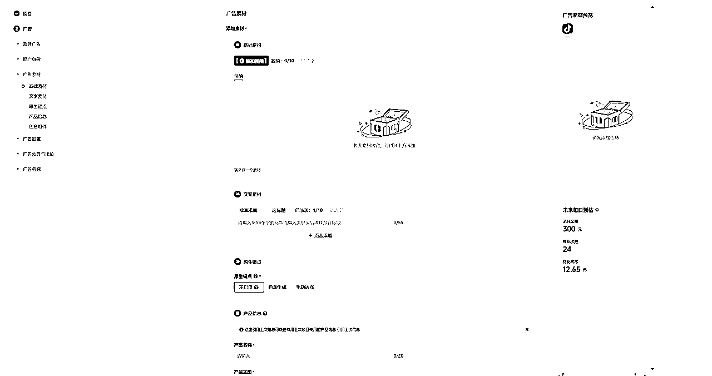
第六步，设置一下每日预算最低是300，这里才是卡预算的地方，所以项目那里尽量多充一点钱备着，因为有时候不止只建一条计划，需要建多计划测试，测试不同的素材，保存关闭以后计划就建好了
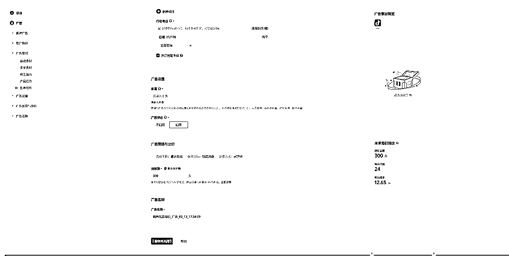
切记，计划开启的时候一定要定时查看，不要跑去忙别的，然后回来发现几分钟内预算全跑飞了，当然，计划建好以后会出现各种各样的问题，比如花不出去钱，或者瞬间花出去很多，光有点击没有转化，点击成本贼高等等
需要根据情况来进行分析跟调整，我也是略懂皮毛，不算精通，也是正在学习中，也欢迎有经验的大佬们多教教我，
如果是传统行业老板，刚好有抖音号，可以小成本测试一下，目前抖音新出的抖+也可以直接投私信，100块钱就可以起投，测试成本更低了，花个几百块钱测试一下，搏一搏，真的比病急乱投医要强
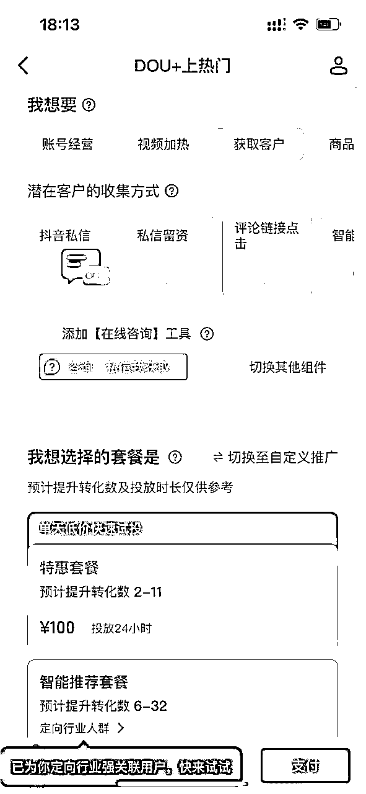
经过这三年的折腾，我特别想跟同样在做实体行业的老板们说几句心里话。
我自己交了很多学费，报了不少课，花了十几万在各种知识付费上，但最后得出的结论其实特别简单：如果你的项目是合规的，对自己的产品和服务有信心，来了客户就能转化，那就直接去抖音或者小红书花个600块钱开个企业号投流吧，合规的把客户导到私域里面去。
真的不要再像我一样去研究那些花里胡哨的东西。矩阵号、截流、蹭热度、黑科技...这些看起来很诱人，但最后都会浪费你大量的时间和精力。
现在平台的投放功能已经很完善了，只要你把产品和服务做好，安心做付费投放就行。我知道很多老板可能会心疼投放费用，但相信我，这钱花得值。至少比你去交各种试错的学费要划算得多。
记住：稳定的获客渠道和可持续的增长，才是实体企业最需要的。所有的野路子、捷径，最后都会让你付出更大的代价。
这就是我用十几万学费和三年时间换来的经验，希望能帮你少走一些弯路。
这篇文章其实我跟AI 一起写的，我选的大模型是claude，以前可能写一篇这样的长文磨磨蹭蹭需要一个星期，但是现在有了AI辅助，根据提示词给到需求，然后经过几轮对话，整个框架就大概写出来了，花了一下午大概半天时间
可以仔细看下我跟AI的对话，其实我自己从头开始写是没有任何思路的，脑子是乱的
但是AI会根据我给出的提示词要求，根据我给的一些信息，不断问我一些关键性的问题，这样可以从中选择一个想要表达的点，然后就像是跟一个朋友聊天，讲完了再让AI汇总一下就可以，整个文章框架就全部出来了，真的真的太省心了！
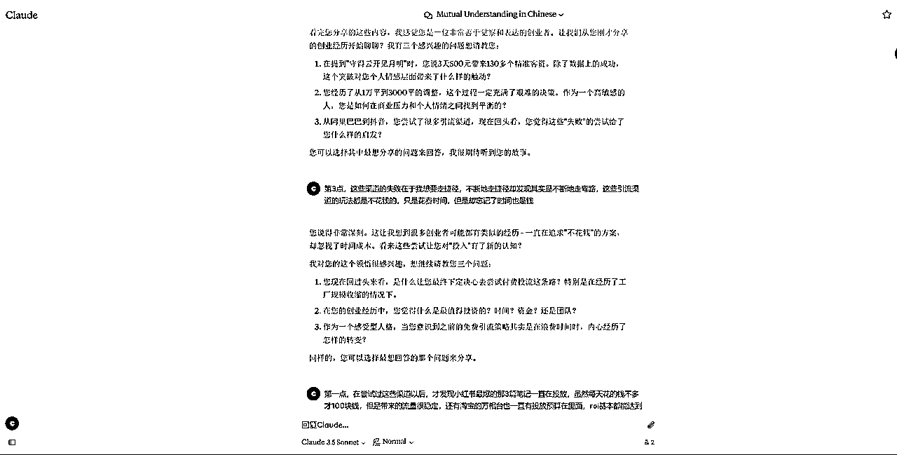
这是 多轮对话以后，AI给我的文章框架，请把AI牛逼打在公屏上，哈哈~
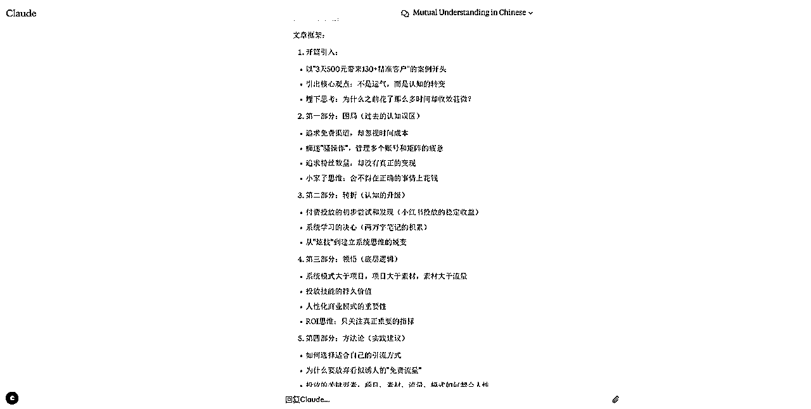
后续有机会再分享整理更多在实际业务中比较好用的提示词！！！